11 Sistemas de Coordenadas
Geomática General
11.1 Mapa
Representa objetos geográficos y otros fenómenos espaciales mostrando gráficamente su localización y atributos.
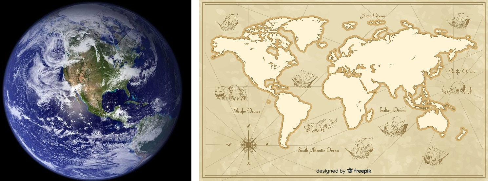
11.2 Elementos del Mapa
- Punto
- Línea
- Área

11.3 ¿Qué es la georreferenciación?
Los datos se referencian a sitios sobre la superficie terrestre mediante:
- Sistema de coordenadas geográficas
- Sistema de coordenadas proyectadas

11.4 La Forma de la Tierra
¿Cómo es realmente la Tierra?


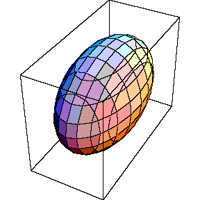

11.5 La tierra y su representación
- Geoide: La forma física real (superficie de igual gravedad).
- Elíptico
- Imperfecto
- Elipsoide o Esferoide: Modelo matemático que mejor se ajusta para cálculos.
- Simplifica cálculos espaciales
- Datum: Un esferoide alineado con un punto conocido.
- Coordenadas Geográficas: Medidas en longitud y latitud con origen en el ecuador y el meridiano principal.
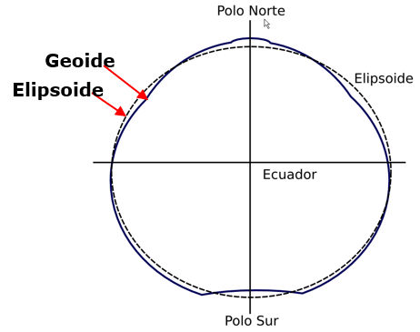
11.6 El Geoide
Superficie en la que todos sus puntos experimentan la misma atracción gravitatoria, siendo esta equivalente a la experimentada al nivel del mar.
Esta superficie no es regular, contiene ondulaciones que alteran los cálculos.

11.7 Conceptos de Datum
¿Qué es un Datum?
Sistema de referencia geográfica basado en un modelo elipsoidal que representa la superficie de la tierra.
Datum Local
Sistemas basados en elipsoides no-geocéntricos, ajustados a la superficie del geoide de un territorio específico.
- Bogotá Observatory (“ARENA”) – Colombia
- Aratu / SAD69 – Brasil
- PSAD56 – Perú
- NAD27 – EE.UU. / GoM
Datum Geocéntrico
Basado en elipsoides cuyo origen de cooordenadas coincide con el centro de masa de la Tierra.
- Estándar internacional: WGS 1984 (GRS80)
- Regional: SIRGAS / MAGNA-SIRGAS
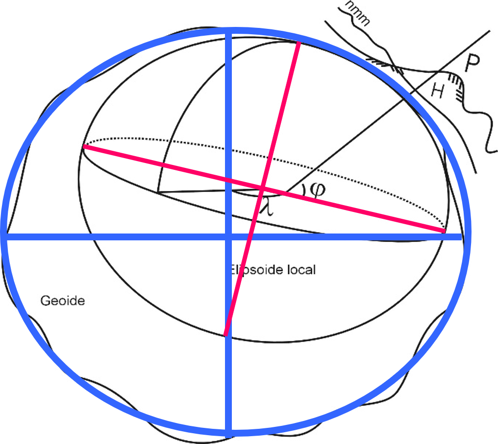
11.8 Sistema de Coordenadas Geográficas
- Medidas: Esféricas.
- Origen: (0,0) -> (Primer Meridiano, Ecuador)
- Latitud: -90° a 90°.
- Longitud: -180° a 180°.
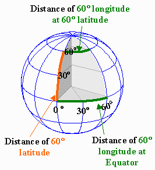
11.9

11.10 Esferoide o Elipsoide
- Definido por el eje semimayor (a) y el eje semimenor (b).
- Aplanamiento: \(f = (a - b) / a\) (diferencia en longitud entre los dos ejes).
- WGS 1984 (Parámetros): (Sistema Geodético Mundial - 1984)
- Elipsoide GRS80 (Geodetic Reference System 1980)
- \(a = 6378137.0\) m
- \(1/f = 298.257223563\)
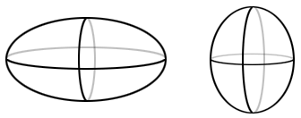

11.11 Geoide - Esferoide o Elipsoide - Datum
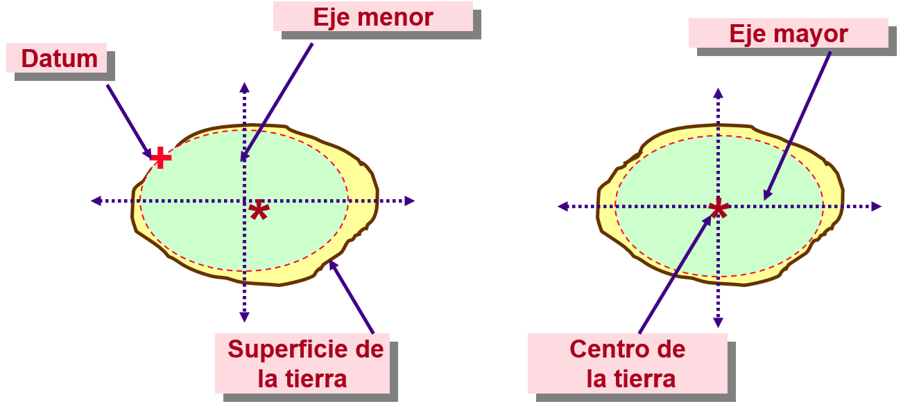
11.12 Datums y Conversión
Marco de referencia para medir sitios sobre la superficie terrestre:
- Local: Ej. NAD27 (Elipsoide Clarke 1866).
- Geocéntrico: Ej. NAD83 / WGS84 (Elipsoide GRS80).

11.13 Georeferenciación de Puntos
- Los puntos sobre la tierra se referencian a un datum
- Para el mismo punto, diferentes datums tienen diferentes valores de coordenadas

11.14 Sistema de Coordenadas Proyectado
- Coordenadas en cuadrícula cartesiana.
- Unidades: metros, pies, etc.
- ¿Medir área o longitud? (¡No en geográficas!).
- Convierte coordenadas esféricas a planas.
- Distorsión (FADD):
- Forma,
- Área,
- Distancia y
- Dirección.
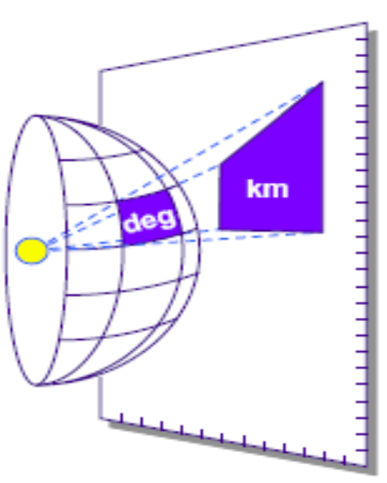
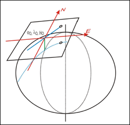
11.15 Sistema de Coordenadas Proyectado
- La ventaja de un sistema plano es que la medida de la longitud, ángulos y áreas son constantes en las dos dimensiones
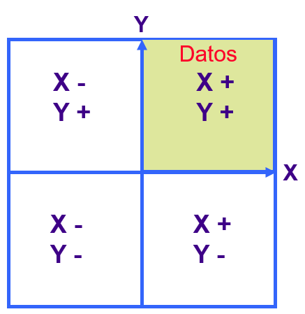
11.16 Conceptos de proyecciones

11.17 Conceptos de proyecciones
La superficie superior de la tierra.
\(\downarrow\)

\(\uparrow\)
Tiene que llenar esta superficie del mapa.
Por lo tanto, mucha de la superficie de la tierra tiene que ser representada mas pequeña que la realidad.
11.18 ¿Qué se afecta al proyectar?
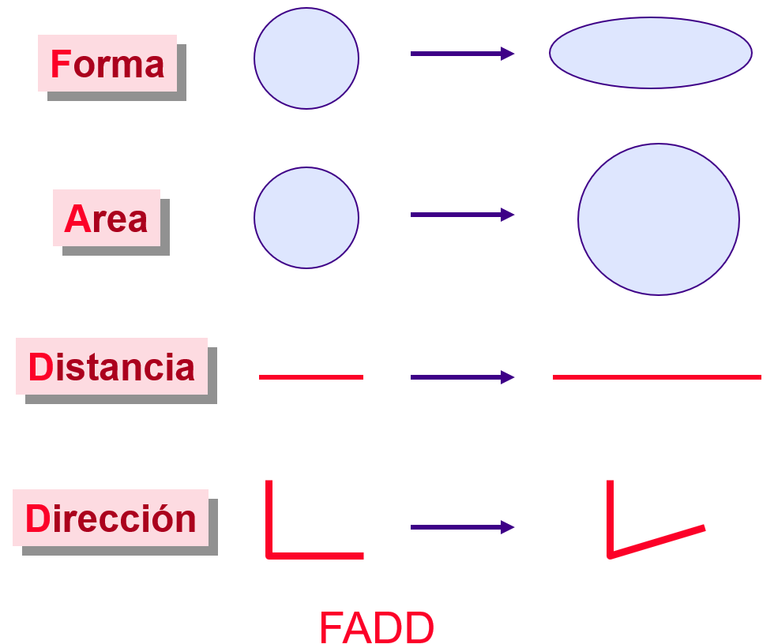
11.19 Clasificación de Proyecciones
| Tipo | Preserva | Ejemplo |
|---|---|---|
| Conforme | Forma | Lambert Conformal Conic |
| Equiarea | Área | Albers Equal Area Conic |
| Equidistante | Distancia | Equidistant Conic |
| Azimutal | Dirección | Lambert Azimuthal |
11.20 Tipos de Proyección
- Cilíndrica (El cilindro envuelve la esfera)
- Cónica (El cono se asienta sobre la esfera)
- Plana / Azimutal (Un plano toca un punto de la esfera)
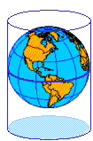


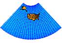

11.21 Proyección Conforme

11.22 Proyección de Áreas Iguales
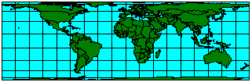
11.23 Proyección Equidistante
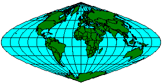
11.24 Proyecciones de verdadera dirección

11.25 Proyecciones cónicas
- Paralelo estándar
- Meridiano central


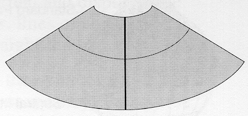
11.26 Proyecciones cilíndricas

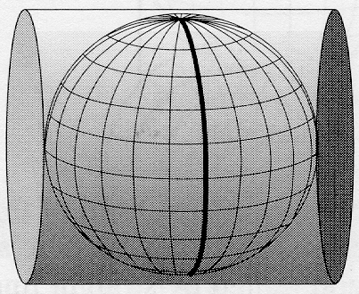

11.27 Universal Transversa de Mercator (UTM)
Es una de las proyecciones cilíndricas más utilizadas globalmente para cartografía de escala media y grande.

11.28 Sistema de Coordenadas UTM
Columnas: Zonas UTM (Longitud)
60 zonas de 6° cada una.

Filas: Bandas de Latitud
20 bandas de 8° (C a X).
Nota para Colombia: Nos ubicamos en las zonas 17, 18 y 19 y en las bandas de latitud N (Norte) y P (más al norte).
11.29 Proyecciones planas
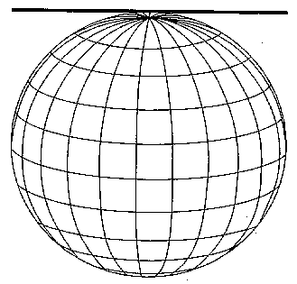
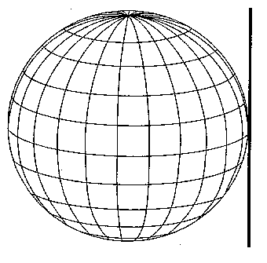

11.30 Parámetros de Proyección
LINEALES
Unidades de medida
- Falso Este
- Falso Norte
- Altura
ANGULARES
Unidades sexagesimales
- Azimuth
- Meridiano Central
- Longitud de Origen
- Paralelo Central
- Latitud de Origen
SIN UNIDADES
Relaciones matemáticas
- Factor de escala
11.31 Explicación de Parámetros
- Falso Este/Norte: Valores constantes sumados a las coordenadas para que siempre sean positivas. En Colombia (Origen Nacional), se usa 5,000,000 m.
- Altura: Define el plano de elevación sobre el cual se proyectan los datos.
- Meridiano Central / Longitud de Origen: La línea vertical de longitud que es el eje central de la proyección.
- Latitud de Origen / Paralelo Central: La línea horizontal que define el origen de las coordenadas Y.
- Azimuth: Ángulo de rotación de la proyección respecto al Norte.
- Factor de escala: Determina cuánto se reduce o amplía la escala en el meridiano central para minimizar la distorsión en los bordes. Por ejemplo, en UTM es 0.9996.
Nota Estos parámetros aseguran que las mediciones en el mapa coincidan lo mejor posible con el terreno real.
11.32 Componentes de un sistema de coordenadas proyectado

11.33 Sistema de Referencia Colombiano
Pre-MAGNA-SIRGAS (ARENA)
Datum Bogotá (1941).
Elipsoide Internacional de 1924 (Hayford)
Proyección Gauss–Krüger (cilíndrica - transversa - conforme)
MAGNA-SIRGAS
SIRGAS: Sistema de Referencia Geocéntrico para las Américas.
MAGNA: Marco Geocéntrico Nacional de Referencia.
60 estaciones GPS de cubrimiento nacional.
11.34 El Origen: Observatorio Astronómico
Punto de Referencia: Pilastra Sur del Observatorio Astronómico de Bogotá.
Coordenadas Geográficas (GCS):
- Latitud (N): 4° 35’ 56.57”
- Longitud (W): 74° 04’ 51.30”
Falsos Orígenes (Gauss-Krüger):
- Falso Norte: 1,000,000 m N
- Falso Este: 1,000,000 m E
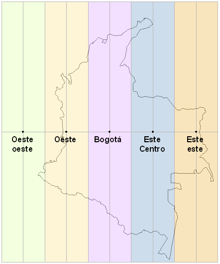
11.35 Sistema de Referencia Colombiano - MAGNA-SIRGAS
Debido a los avances científicos y tecnológicos de la Geodesia (especialmente GPS), el IGAC reemplazó el antiguo Datum Bogotá por un sistema moderno y compatible a nivel internacional.
Referencia Global
- WGS84: Implementado por el Departamento de Defensa de EE. UU. (Serie WGS60, 66, 72 y 84).
- ITRS: Sistema Internacional de Referencia Terrestre con origen en el centro de masas de la Tierra.
Red Nacional
- SIRGAS: Sistema de Referencia Geocéntrico para las Américas. Red de estaciones GPS de alta precisión.
- MAGNA: Marco Geocéntrico Nacional de Referencia. Es la densificación de SIRGAS en Colombia.
Es el sistema oficial que garantiza que la cartografía colombiana sea totalmente compatible con las tecnologías de posicionamiento global modernas.
11.36 SIRGAS: Sistema de Referencia Geocéntrico para las Américas
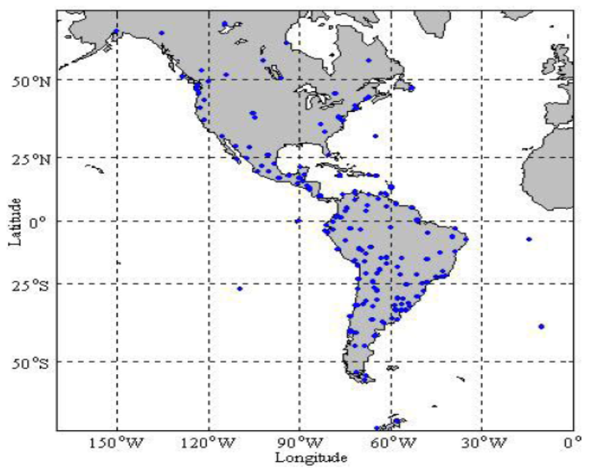
11.37 El Sistema Gauss-Krüger en Colombia
¿Cómo funcionaba?
- Seis Cilindros: El país se dividió en 6 fajas transversales cada 3° de longitud: 68°, 71°, 74°, 77°, 80° y 83° W.
- Zona Insular: La sexta faja (83° W) no suele aparecer en los mapas continentales, pero es la que cubre a San Andrés y Providencia.
- Origen Bogotá: El meridiano central principal es el de 74° W (Observatorio de Bogotá).
- Parámetros: Para evitar números negativos, cada zona usaba un Falso Este y Norte de 1,000,000 m.

11.38 El Gran Problema del Sistema Antiguo
¿Por qué tuvimos que cambiar?
Coordenadas Repetidas
Como cada una de las 6 fajas empezaba a contar desde 1,000,000 m, una misma coordenada (ej: X=1,100,000 ; Y=1,000,000) podía existir en 6 lugares diferentes de Colombia.
Confusión total: Si no especificabas a qué zona pertenecía el dato, el punto podía caer en el Chocó o en el Vichada.
Próxima Diapositiva: Veremos cómo el Origen Nacional Único solucionó esto “estirando” un solo cilindro para todo el país.
11.39 El Nuevo Origen Nacional (EPSG:9377)
Unificación de las 6 fajas
Para resolver el caos de las coordenadas repetidas, el IGAC definió un único origen para todo el país:
- Meridiano Central: Se fijó oficialmente en 73° W (simplificando el antiguo origen de la faja de Bogotá).
- Latitud de Origen: Se mantiene el paralelo del Observatorio (4° 35’ 46.32” N).
- El gran cambio (Falsos): * Norte: 2,000,000 m
- Este: 5,000,000 m

11.40 ¿Por qué 5,000,000 en el Este?
Adiós a la confusión
Al usar 5,000,000, nos aseguramos de que:
- Distinción inmediata: Si una coordenada empieza por 5 millones, sabes que es el nuevo sistema. Si empieza por 1 millón, es el sistema viejo.
- Sin repeticiones: El número es lo suficientemente grande para que toda la extensión de Colombia (desde el Amazonas hasta el Chocó) quepa en un solo plano sin cruzar el cero ni repetir coordenadas de otras fajas.
Dato Curioso: Este sistema permite que un solo mapa de Colombia sea “continuo”, eliminando las molestas costuras que se formaban entre las 6 fajas antiguas. Mas información acá
11.41 Guía de Referencia EPSG: Colombia
| Sistema / Faja | Código EPSG | Meridiano Central | Estado |
|---|---|---|---|
| WGS 84 | 4326 | - | Global |
| MAGNA-SIRGAS | 4686 | - | Nacional |
| Origen Nacional | 9377 | 73° W | ACTUAL |
| Central (Bogotá) | 3116 | 74° 04’ W | Histórico |
| Este Central | 3117 | 73° 04’ W | Histórico |
| Este | 3118 | 71° 04’ W | Histórico |
| Oeste | 3115 | 75° 04’ W | Histórico |
| Oeste Oeste | 3114 | 77° 04’ W | Histórico |
| Datum Bogotá | 4218 | - | ARENA |